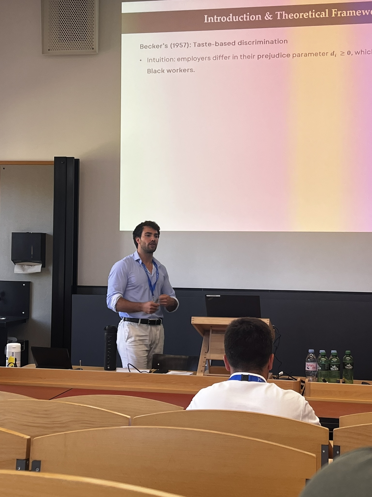

Research
My research focuses on applied microeconomics and behavioral economics, often using sports settings and data to study individual behavior, markets, and organizations. I also work on broader questions in sports economics.

Working Papers
01
Discrimination Without Wage Gaps? Racial Preferences and Workplace Segregation in a Virtual Labor Market
We test two implications of Becker’s theory of taste-based discrimination, examining how racial preferences shape workplace sorting and segregation in a highly competitive, information-rich setting.
Labor Discrimination Markets
02
When Good Luck Turns Against You: Performance Responses to Noisy Intermediate Outcomes
We study how performers respond when intermediate outcomes exceed or fall short of underlying performance, isolating behavioral responses to noisy feedback.
Behavioral Information Performance
03
Sport Stadiums and Urban Economic Development: Evidence from Nightlight Data in Europe
We study how European stadium openings affect local economic activity using high-frequency, high-resolution nighttime-light satellite data.
Urban Causal inference Nightlights
04
Who Sees Politics in Sports? Norm Endorsement and Partisan Judgments from the 2026 World Cup
We examine when people interpret conduct in sport as political and how norm endorsement and partisanship shape those judgments.
Political economy Norms Judgment
Work in Progress
Luck and Random Assignment
Using professional tennis data, we study how luck generated by random draws affects subsequent performance and whether these effects persist over the longer term.
In progress
Publications
2026
2025